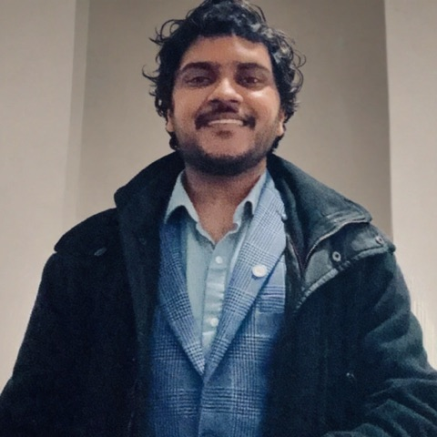

SSRF Beyond HTTP: Egress-Path-Incomplete Guards in AI Agent Platforms
A formal egress-path-incomplete SSRF model instantiated on CVE-2026-33234 (AutoGPT). Zenodo, 2026.
I build offensive security tooling and break systems. Seventeen open-source builds, several of them security tools, a live exploit lab, and 12 published CVEs across Apple, CISA, the NSA, AutoGPT, yt-dlp, and BlueprintUE. This is where the code and the exploits live.

Twelve published CVEs across Apple, the NSA, CISA, AutoGPT, yt-dlp, and BlueprintUE, covering sandbox escapes, SSRF, authentication bypass, IDOR, path traversal, and denial of service.
Credited by CISA in advisory ICSA-26-230-01 for reporting CVE-2026-63133, CVE-2026-63134, and CVE-2026-63177 in CISA Malcolm, and by Apple in macOS security updates.
Live reproduction scripts for disclosed bugs. Each visit loads a random proof of concept, and the tabs switch between them.
Open-access security research preprints with permanent DOIs, indexed by OpenAIRE.
A formal egress-path-incomplete SSRF model instantiated on CVE-2026-33234 (AutoGPT). Zenodo, 2026.
File-write attacks from attacker-controlled archive and download metadata across three 2026 CVEs. Zenodo, 2026.
Independent databases, vendors, government agencies, security media, and community that track, credit, and feature this work. Every link verified against its source.
Credits Pavan Nallamothu for CVE-2026-50023 in yt-dlp. Surfaced automatically inside enterprise dependency scans worldwide.
Credited in ICSA-26-230-01 for CVE-2026-63133, CVE-2026-63134, and CVE-2026-63177 in CISA Malcolm.
Credited in Apple's macOS security release notes for CVE-2026-43763 in Apple Type Services.
Credited reporter on the GitHub-reviewed advisory for the yt-dlp filename bug, GHSA-c6mh-fpjc-4pr3.
Google's open vulnerability database mirrors the credited advisories into automated supply-chain tooling.
Apple's advisory APPLE-SA-07-27-2026-3 on the Full-Disclosure mailing list credits Pavan Nallamothu by name for CVE-2026-43763.
Independent coverage of CISA ICSA-26-230-01 that credits pavanchow among the researchers who reported the Malcolm findings.
Independent write-up naming pavanchow as the reporter of CVE-2026-63133, CVE-2026-63134, and CVE-2026-63177 to CISA.
First non-government site to credit pavanchow for the CISA Malcolm advisory ICSA-26-230-01.
Featured as a SECON NJ 2024 organizer and speaker on Zero Trust, with a full-name researcher bio in the chapter newsletter.
Running AWS infrastructure at scale, building and hosting CTF challenges, and supporting a university campus.
Master of Science in Cybersecurity from Pace University, awarded a Graduate Merit Scholarship.
Pace University, New York, NY · 2023 - 2025 · Graduate Merit Scholarship
Talks, mentoring, competition, and event organizing across the security and open-source communities.
Seventeen systems tools written from scratch in Rust, each its own repository with a live project page. Build-your-own versions of the software I break for a living, from a static analyzer to a version-control core.
A query language whose result is an attack path across identity and network graphs, not rows. Aimed at AWS IAM privilege escalation and lateral movement.
A static analyzer for Python, JavaScript, and PHP that returns the data-flow path from source to sink, not just a warning.
An EVM bytecode disassembler that reconstructs intent and flags dangerous opcodes, not just mnemonics.
An encryption toolkit with from-scratch ChaCha20-Poly1305 AEAD, proven against the RFC 8439 test vectors.
An embedded key-value store, the SQLite of KV stores. A single binary and a directory, no server to run.
A reverse proxy whose routing rules are a compiled DSL, not YAML.
A cron scheduler built as a single binary around a pure, unit-tested schedule engine you can embed.
A readable global memory allocator that reports bytes-in-use and peak live memory.
A length-prefixed binary wire protocol you can read in one sitting.
A version-control core with content-addressed blob, tree, and commit objects. The git idea made readable.
A full-text search engine with an inverted index and TF-IDF ranking, readable end to end.
A panic-free stack bytecode VM with its own assembler and bytecode format.
A CHIP-8 CPU emulator you can unit-test opcode by opcode.
A tiny embeddable scripting language and interpreter you can read in a sitting.
A software rasterizer that draws real 3D triangles on the CPU with a z-buffer, no GPU.
A reverse-mode autograd engine you can follow node by node. Trains a network on XOR.
An audio synthesis engine with oscillators, an ADSR envelope, and a hand-written WAV writer.
Type help to see all commands. Try neofetch, cves, experience, or scan github.com.
Reach out for collaboration, coordinated disclosure, or a conversation about offensive security.
Have a question or want to work together? Reach out directly.
Connect with Pavan Nallamothu on LinkedIn.
Just kidding. But you did type the Konami Code!